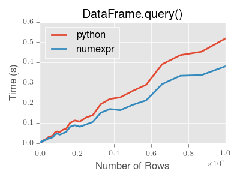
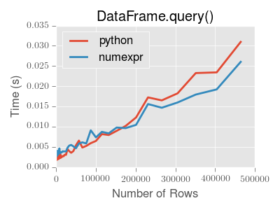
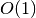

Indexing and Selecting Data¶
The axis labeling information in pandas objects serves many purposes:
- Identifies data (i.e. provides metadata) using known indicators, important for for analysis, visualization, and interactive console display
- Enables automatic and explicit data alignment
- Allows intuitive getting and setting of subsets of the data set
In this section, we will focus on the final point: namely, how to slice, dice, and generally get and set subsets of pandas objects. The primary focus will be on Series and DataFrame as they have received more development attention in this area. Expect more work to be invested higher-dimensional data structures (including Panel) in the future, especially in label-based advanced indexing.
Note
The Python and NumPy indexing operators [] and attribute operator . provide quick and easy access to pandas data structures across a wide range of use cases. This makes interactive work intuitive, as there’s little new to learn if you already know how to deal with Python dictionaries and NumPy arrays. However, since the type of the data to be accessed isn’t known in advance, directly using standard operators has some optimization limits. For production code, we recommended that you take advantage of the optimized pandas data access methods exposed in this chapter.
Warning
Whether a copy or a reference is returned for a setting operation, may depend on the context. This is sometimes called chained assignment and should be avoided. See Returning a View versus Copy
See the cookbook for some advanced strategies
Different Choices for Indexing (loc, iloc, and ix)¶
New in version 0.11.0.
Object selection has had a number of user-requested additions in order to support more explicit location based indexing. Pandas now supports three types of multi-axis indexing.
.loc is strictly label based, will raise KeyError when the items are not found, allowed inputs are:
- A single label, e.g. 5 or 'a', (note that 5 is interpreted as a label of the index. This use is not an integer position along the index)
- A list or array of labels ['a', 'b', 'c']
- A slice object with labels 'a':'f', (note that contrary to usual python slices, both the start and the stop are included!)
- A boolean array
See more at Selection by Label
.iloc is strictly integer position based (from 0 to length-1 of the axis), will raise IndexError when the requested indicies are out of bounds. Allowed inputs are:
- An integer e.g. 5
- A list or array of integers [4, 3, 0]
- A slice object with ints 1:7
See more at Selection by Position
.ix supports mixed integer and label based access. It is primarily label based, but will fallback to integer positional access. .ix is the most general and will support any of the inputs to .loc and .iloc, as well as support for floating point label schemes. .ix is especially useful when dealing with mixed positional and label based hierarchial indexes. As using integer slices with .ix have different behavior depending on whether the slice is interpreted as position based or label based, it’s usually better to be explicit and use .iloc or .loc.
See more at Advanced Indexing, Advanced Hierarchical and Fallback Indexing
Getting values from an object with multi-axes selection uses the following notation (using .loc as an example, but applies to .iloc and .ix as well). Any of the axes accessors may be the null slice :. Axes left out of the specification are assumed to be :. (e.g. p.loc['a'] is equiv to p.loc['a', :, :])
| Object Type | Indexers |
|---|---|
| Series | s.loc[indexer] |
| DataFrame | df.loc[row_indexer,column_indexer] |
| Panel | p.loc[item_indexer,major_indexer,minor_indexer] |
Deprecations¶
Beginning with version 0.11.0, it’s recommended that you transition away from the following methods as they may be deprecated in future versions.
- irow
- icol
- iget_value
See the section Selection by Position for substitutes.
Basics¶
As mentioned when introducing the data structures in the last section, the primary function of indexing with [] (a.k.a. __getitem__ for those familiar with implementing class behavior in Python) is selecting out lower-dimensional slices. Thus,
| Object Type | Selection | Return Value Type |
|---|---|---|
| Series | series[label] | scalar value |
| DataFrame | frame[colname] | Series corresponding to colname |
| Panel | panel[itemname] | DataFrame corresponing to the itemname |
Here we construct a simple time series data set to use for illustrating the indexing functionality:
In [1]: dates = date_range('1/1/2000', periods=8)
In [2]: df = DataFrame(randn(8, 4), index=dates, columns=['A', 'B', 'C', 'D'])
In [3]: df
Out[3]:
A B C D
2000-01-01 0.469112 -0.282863 -1.509059 -1.135632
2000-01-02 1.212112 -0.173215 0.119209 -1.044236
2000-01-03 -0.861849 -2.104569 -0.494929 1.071804
2000-01-04 0.721555 -0.706771 -1.039575 0.271860
2000-01-05 -0.424972 0.567020 0.276232 -1.087401
2000-01-06 -0.673690 0.113648 -1.478427 0.524988
2000-01-07 0.404705 0.577046 -1.715002 -1.039268
2000-01-08 -0.370647 -1.157892 -1.344312 0.844885
[8 rows x 4 columns]
In [4]: panel = Panel({'one' : df, 'two' : df - df.mean()})
In [5]: panel
Out[5]:
<class 'pandas.core.panel.Panel'>
Dimensions: 2 (items) x 8 (major_axis) x 4 (minor_axis)
Items axis: one to two
Major_axis axis: 2000-01-01 00:00:00 to 2000-01-08 00:00:00
Minor_axis axis: A to D
Note
None of the indexing functionality is time series specific unless specifically stated.
Thus, as per above, we have the most basic indexing using []:
In [6]: s = df['A']
In [7]: s[dates[5]]
Out[7]: -0.67368970808837059
In [8]: panel['two']
Out[8]:
A B C D
2000-01-01 0.409571 0.113086 -0.610826 -0.936507
2000-01-02 1.152571 0.222735 1.017442 -0.845111
2000-01-03 -0.921390 -1.708620 0.403304 1.270929
2000-01-04 0.662014 -0.310822 -0.141342 0.470985
2000-01-05 -0.484513 0.962970 1.174465 -0.888276
2000-01-06 -0.733231 0.509598 -0.580194 0.724113
2000-01-07 0.345164 0.972995 -0.816769 -0.840143
2000-01-08 -0.430188 -0.761943 -0.446079 1.044010
[8 rows x 4 columns]
You can pass a list of columns to [] to select columns in that order. If a column is not contained in the DataFrame, an exception will be raised. Multiple columns can also be set in this manner:
In [9]: df
Out[9]:
A B C D
2000-01-01 0.469112 -0.282863 -1.509059 -1.135632
2000-01-02 1.212112 -0.173215 0.119209 -1.044236
2000-01-03 -0.861849 -2.104569 -0.494929 1.071804
2000-01-04 0.721555 -0.706771 -1.039575 0.271860
2000-01-05 -0.424972 0.567020 0.276232 -1.087401
2000-01-06 -0.673690 0.113648 -1.478427 0.524988
2000-01-07 0.404705 0.577046 -1.715002 -1.039268
2000-01-08 -0.370647 -1.157892 -1.344312 0.844885
[8 rows x 4 columns]
In [10]: df[['B', 'A']] = df[['A', 'B']]
In [11]: df
Out[11]:
A B C D
2000-01-01 -0.282863 0.469112 -1.509059 -1.135632
2000-01-02 -0.173215 1.212112 0.119209 -1.044236
2000-01-03 -2.104569 -0.861849 -0.494929 1.071804
2000-01-04 -0.706771 0.721555 -1.039575 0.271860
2000-01-05 0.567020 -0.424972 0.276232 -1.087401
2000-01-06 0.113648 -0.673690 -1.478427 0.524988
2000-01-07 0.577046 0.404705 -1.715002 -1.039268
2000-01-08 -1.157892 -0.370647 -1.344312 0.844885
[8 rows x 4 columns]
You may find this useful for applying a transform (in-place) to a subset of the columns.
Attribute Access¶
You may access an index on a Series, column on a DataFrame, and a item on a Panel directly as an attribute:
In [12]: sa = Series([1,2,3],index=list('abc'))
In [13]: dfa = df.copy()
In [14]: sa.b
Out[14]: 2
In [15]: dfa.A
Out[15]:
2000-01-01 -0.282863
2000-01-02 -0.173215
2000-01-03 -2.104569
2000-01-04 -0.706771
2000-01-05 0.567020
2000-01-06 0.113648
2000-01-07 0.577046
2000-01-08 -1.157892
Freq: D, Name: A, dtype: float64
In [16]: panel.one
Out[16]:
A B C D
2000-01-01 0.469112 -0.282863 -1.509059 -1.135632
2000-01-02 1.212112 -0.173215 0.119209 -1.044236
2000-01-03 -0.861849 -2.104569 -0.494929 1.071804
2000-01-04 0.721555 -0.706771 -1.039575 0.271860
2000-01-05 -0.424972 0.567020 0.276232 -1.087401
2000-01-06 -0.673690 0.113648 -1.478427 0.524988
2000-01-07 0.404705 0.577046 -1.715002 -1.039268
2000-01-08 -0.370647 -1.157892 -1.344312 0.844885
[8 rows x 4 columns]
Setting is allowed as well
In [17]: sa.a = 5
In [18]: sa
Out[18]:
a 5
b 2
c 3
dtype: int64
In [19]: dfa.A = list(range(len(dfa.index)))
In [20]: dfa
Out[20]:
A B C D
2000-01-01 0 0.469112 -1.509059 -1.135632
2000-01-02 1 1.212112 0.119209 -1.044236
2000-01-03 2 -0.861849 -0.494929 1.071804
2000-01-04 3 0.721555 -1.039575 0.271860
2000-01-05 4 -0.424972 0.276232 -1.087401
2000-01-06 5 -0.673690 -1.478427 0.524988
2000-01-07 6 0.404705 -1.715002 -1.039268
2000-01-08 7 -0.370647 -1.344312 0.844885
[8 rows x 4 columns]
Warning
- You can use this access only if the index element is a valid python identifier, e.g. s.1 is not allowed. see here for an explanation of valid identifiers.
- The attribute will not be available if it conflicts with an existing method name, e.g. s.min is not allowed.
- The Series/Panel accesses are available starting in 0.13.0.
If you are using the IPython environment, you may also use tab-completion to see these accessable attributes.
Slicing ranges¶
The most robust and consistent way of slicing ranges along arbitrary axes is described in the Selection by Position section detailing the .iloc method. For now, we explain the semantics of slicing using the [] operator.
With Series, the syntax works exactly as with an ndarray, returning a slice of the values and the corresponding labels:
In [21]: s[:5]
Out[21]:
2000-01-01 -0.282863
2000-01-02 -0.173215
2000-01-03 -2.104569
2000-01-04 -0.706771
2000-01-05 0.567020
Freq: D, Name: A, dtype: float64
In [22]: s[::2]
Out[22]:
2000-01-01 -0.282863
2000-01-03 -2.104569
2000-01-05 0.567020
2000-01-07 0.577046
Freq: 2D, Name: A, dtype: float64
In [23]: s[::-1]
Out[23]:
2000-01-08 -1.157892
2000-01-07 0.577046
2000-01-06 0.113648
2000-01-05 0.567020
2000-01-04 -0.706771
2000-01-03 -2.104569
2000-01-02 -0.173215
2000-01-01 -0.282863
Freq: -1D, Name: A, dtype: float64
Note that setting works as well:
In [24]: s2 = s.copy()
In [25]: s2[:5] = 0
In [26]: s2
Out[26]:
2000-01-01 0.000000
2000-01-02 0.000000
2000-01-03 0.000000
2000-01-04 0.000000
2000-01-05 0.000000
2000-01-06 0.113648
2000-01-07 0.577046
2000-01-08 -1.157892
Freq: D, Name: A, dtype: float64
With DataFrame, slicing inside of [] slices the rows. This is provided largely as a convenience since it is such a common operation.
In [27]: df[:3]
Out[27]:
A B C D
2000-01-01 -0.282863 0.469112 -1.509059 -1.135632
2000-01-02 -0.173215 1.212112 0.119209 -1.044236
2000-01-03 -2.104569 -0.861849 -0.494929 1.071804
[3 rows x 4 columns]
In [28]: df[::-1]
Out[28]:
A B C D
2000-01-08 -1.157892 -0.370647 -1.344312 0.844885
2000-01-07 0.577046 0.404705 -1.715002 -1.039268
2000-01-06 0.113648 -0.673690 -1.478427 0.524988
2000-01-05 0.567020 -0.424972 0.276232 -1.087401
2000-01-04 -0.706771 0.721555 -1.039575 0.271860
2000-01-03 -2.104569 -0.861849 -0.494929 1.071804
2000-01-02 -0.173215 1.212112 0.119209 -1.044236
2000-01-01 -0.282863 0.469112 -1.509059 -1.135632
[8 rows x 4 columns]
Selection By Label¶
Warning
Whether a copy or a reference is returned for a setting operation, may depend on the context. This is sometimes called chained assignment and should be avoided. See Returning a View versus Copy
Pandas provides a suite of methods in order to have purely label based indexing. This is a strict inclusion based protocol. ALL of the labels for which you ask, must be in the index or a KeyError will be raised! When slicing, the start bound is included, AND the stop bound is included. Integers are valid labels, but they refer to the label and not the position.
The .loc attribute is the primary access method. The following are valid inputs:
- A single label, e.g. 5 or 'a', (note that 5 is interpreted as a label of the index. This use is not an integer position along the index)
- A list or array of labels ['a', 'b', 'c']
- A slice object with labels 'a':'f' (note that contrary to usual python slices, both the start and the stop are included!)
- A boolean array
In [29]: s1 = Series(np.random.randn(6),index=list('abcdef'))
In [30]: s1
Out[30]:
a 1.075770
b -0.109050
c 1.643563
d -1.469388
e 0.357021
f -0.674600
dtype: float64
In [31]: s1.loc['c':]
Out[31]:
c 1.643563
d -1.469388
e 0.357021
f -0.674600
dtype: float64
In [32]: s1.loc['b']
Out[32]: -0.10904997528022223
Note that setting works as well:
In [33]: s1.loc['c':] = 0
In [34]: s1
Out[34]:
a 1.07577
b -0.10905
c 0.00000
d 0.00000
e 0.00000
f 0.00000
dtype: float64
With a DataFrame
In [35]: df1 = DataFrame(np.random.randn(6,4),
....: index=list('abcdef'),
....: columns=list('ABCD'))
....:
In [36]: df1
Out[36]:
A B C D
a -1.776904 -0.968914 -1.294524 0.413738
b 0.276662 -0.472035 -0.013960 -0.362543
c -0.006154 -0.923061 0.895717 0.805244
d -1.206412 2.565646 1.431256 1.340309
e -1.170299 -0.226169 0.410835 0.813850
f 0.132003 -0.827317 -0.076467 -1.187678
[6 rows x 4 columns]
In [37]: df1.loc[['a','b','d'],:]
Out[37]:
A B C D
a -1.776904 -0.968914 -1.294524 0.413738
b 0.276662 -0.472035 -0.013960 -0.362543
d -1.206412 2.565646 1.431256 1.340309
[3 rows x 4 columns]
Accessing via label slices
In [38]: df1.loc['d':,'A':'C']
Out[38]:
A B C
d -1.206412 2.565646 1.431256
e -1.170299 -0.226169 0.410835
f 0.132003 -0.827317 -0.076467
[3 rows x 3 columns]
For getting a cross section using a label (equiv to df.xs('a'))
In [39]: df1.loc['a']
Out[39]:
A -1.776904
B -0.968914
C -1.294524
D 0.413738
Name: a, dtype: float64
For getting values with a boolean array
In [40]: df1.loc['a']>0
Out[40]:
A False
B False
C False
D True
Name: a, dtype: bool
In [41]: df1.loc[:,df1.loc['a']>0]
Out[41]:
D
a 0.413738
b -0.362543
c 0.805244
d 1.340309
e 0.813850
f -1.187678
[6 rows x 1 columns]
For getting a value explicity (equiv to deprecated df.get_value('a','A'))
# this is also equivalent to ``df1.at['a','A']``
In [42]: df1.loc['a','A']
Out[42]: -1.7769037169718671
Selection By Position¶
Warning
Whether a copy or a reference is returned for a setting operation, may depend on the context. This is sometimes called chained assignment and should be avoided. See Returning a View versus Copy
Pandas provides a suite of methods in order to get purely integer based indexing. The semantics follow closely python and numpy slicing. These are 0-based indexing. When slicing, the start bounds is included, while the upper bound is excluded. Trying to use a non-integer, even a valid label will raise a IndexError.
The .iloc attribute is the primary access method. The following are valid inputs:
- An integer e.g. 5
- A list or array of integers [4, 3, 0]
- A slice object with ints 1:7
In [43]: s1 = Series(np.random.randn(5),index=list(range(0,10,2)))
In [44]: s1
Out[44]:
0 1.130127
2 -1.436737
4 -1.413681
6 1.607920
8 1.024180
dtype: float64
In [45]: s1.iloc[:3]
Out[45]:
0 1.130127
2 -1.436737
4 -1.413681
dtype: float64
In [46]: s1.iloc[3]
Out[46]: 1.6079204745847746
Note that setting works as well:
In [47]: s1.iloc[:3] = 0
In [48]: s1
Out[48]:
0 0.00000
2 0.00000
4 0.00000
6 1.60792
8 1.02418
dtype: float64
With a DataFrame
In [49]: df1 = DataFrame(np.random.randn(6,4),
....: index=list(range(0,12,2)),
....: columns=list(range(0,8,2)))
....:
In [50]: df1
Out[50]:
0 2 4 6
0 0.569605 0.875906 -2.211372 0.974466
2 -2.006747 -0.410001 -0.078638 0.545952
4 -1.219217 -1.226825 0.769804 -1.281247
6 -0.727707 -0.121306 -0.097883 0.695775
8 0.341734 0.959726 -1.110336 -0.619976
10 0.149748 -0.732339 0.687738 0.176444
[6 rows x 4 columns]
Select via integer slicing
In [51]: df1.iloc[:3]
Out[51]:
0 2 4 6
0 0.569605 0.875906 -2.211372 0.974466
2 -2.006747 -0.410001 -0.078638 0.545952
4 -1.219217 -1.226825 0.769804 -1.281247
[3 rows x 4 columns]
In [52]: df1.iloc[1:5,2:4]
Out[52]:
4 6
2 -0.078638 0.545952
4 0.769804 -1.281247
6 -0.097883 0.695775
8 -1.110336 -0.619976
[4 rows x 2 columns]
Select via integer list
In [53]: df1.iloc[[1,3,5],[1,3]]
Out[53]:
2 6
2 -0.410001 0.545952
6 -0.121306 0.695775
10 -0.732339 0.176444
[3 rows x 2 columns]
For slicing rows explicitly (equiv to deprecated df.irow(slice(1,3))).
In [54]: df1.iloc[1:3,:]
Out[54]:
0 2 4 6
2 -2.006747 -0.410001 -0.078638 0.545952
4 -1.219217 -1.226825 0.769804 -1.281247
[2 rows x 4 columns]
For slicing columns explicitly (equiv to deprecated df.icol(slice(1,3))).
In [55]: df1.iloc[:,1:3]
Out[55]:
2 4
0 0.875906 -2.211372
2 -0.410001 -0.078638
4 -1.226825 0.769804
6 -0.121306 -0.097883
8 0.959726 -1.110336
10 -0.732339 0.687738
[6 rows x 2 columns]
For getting a scalar via integer position (equiv to deprecated df.get_value(1,1))
# this is also equivalent to ``df1.iat[1,1]``
In [56]: df1.iloc[1,1]
Out[56]: -0.41000056806065832
For getting a cross section using an integer position (equiv to df.xs(1))
In [57]: df1.iloc[1]
Out[57]:
0 -2.006747
2 -0.410001
4 -0.078638
6 0.545952
Name: 2, dtype: float64
There is one signficant departure from standard python/numpy slicing semantics. python/numpy allow slicing past the end of an array without an associated error.
# these are allowed in python/numpy.
In [58]: x = list('abcdef')
In [59]: x[4:10]
Out[59]: ['e', 'f']
In [60]: x[8:10]
Out[60]: []
Pandas will detect this and raise IndexError, rather than return an empty structure.
>>> df.iloc[:,3:6]
IndexError: out-of-bounds on slice (end)
Setting With Enlargement¶
New in version 0.13.
The .loc/.ix/[] operations can perform enlargement when setting a non-existant key for that axis.
In the Series case this is effectively an appending operation
In [61]: se = Series([1,2,3])
In [62]: se
Out[62]:
0 1
1 2
2 3
dtype: int64
In [63]: se[5] = 5.
In [64]: se
Out[64]:
0 1
1 2
2 3
5 5
dtype: float64
A DataFrame can be enlarged on either axis via .loc
In [65]: dfi = DataFrame(np.arange(6).reshape(3,2),
....: columns=['A','B'])
....:
In [66]: dfi
Out[66]:
A B
0 0 1
1 2 3
2 4 5
[3 rows x 2 columns]
In [67]: dfi.loc[:,'C'] = dfi.loc[:,'A']
In [68]: dfi
Out[68]:
A B C
0 0 1 0
1 2 3 2
2 4 5 4
[3 rows x 3 columns]
This is like an append operation on the DataFrame.
In [69]: dfi.loc[3] = 5
In [70]: dfi
Out[70]:
A B C
0 0 1 0
1 2 3 2
2 4 5 4
3 5 5 5
[4 rows x 3 columns]
Fast scalar value getting and setting¶
Since indexing with [] must handle a lot of cases (single-label access, slicing, boolean indexing, etc.), it has a bit of overhead in order to figure out what you’re asking for. If you only want to access a scalar value, the fastest way is to use the at and iat methods, which are implemented on all of the data structures.
Similary to loc, at provides label based scalar lookups, while, iat provides integer based lookups analagously to iloc
In [71]: s.iat[5]
Out[71]: 0.1136484096888855
In [72]: df.at[dates[5], 'A']
Out[72]: 0.1136484096888855
In [73]: df.iat[3, 0]
Out[73]: -0.70677113363008448
You can also set using these same indexers.
In [74]: df.at[dates[5], 'E'] = 7
In [75]: df.iat[3, 0] = 7
at may enlarge the object in-place as above if the indexer is missing.
In [76]: df.at[dates[-1]+1, 0] = 7
In [77]: df
Out[77]:
A B C D E 0
2000-01-01 -0.282863 0.469112 -1.509059 -1.135632 NaN NaN
2000-01-02 -0.173215 1.212112 0.119209 -1.044236 NaN NaN
2000-01-03 -2.104569 -0.861849 -0.494929 1.071804 NaN NaN
2000-01-04 7.000000 0.721555 -1.039575 0.271860 NaN NaN
2000-01-05 0.567020 -0.424972 0.276232 -1.087401 NaN NaN
2000-01-06 0.113648 -0.673690 -1.478427 0.524988 7 NaN
2000-01-07 0.577046 0.404705 -1.715002 -1.039268 NaN NaN
2000-01-08 -1.157892 -0.370647 -1.344312 0.844885 NaN NaN
2000-01-09 NaN NaN NaN NaN NaN 7
[9 rows x 6 columns]
Boolean indexing¶
Another common operation is the use of boolean vectors to filter the data. The operators are: | for or, & for and, and ~ for not. These must be grouped by using parentheses.
Using a boolean vector to index a Series works exactly as in a numpy ndarray:
In [78]: s[s > 0]
Out[78]:
2000-01-05 0.567020
2000-01-06 0.113648
2000-01-07 0.577046
Freq: D, Name: A, dtype: float64
In [79]: s[(s < 0) & (s > -0.5)]
Out[79]:
2000-01-01 -0.282863
2000-01-02 -0.173215
Freq: D, Name: A, dtype: float64
In [80]: s[(s < -1) | (s > 1 )]
Out[80]:
2000-01-03 -2.104569
2000-01-08 -1.157892
Name: A, dtype: float64
In [81]: s[~(s < 0)]
Out[81]:
2000-01-05 0.567020
2000-01-06 0.113648
2000-01-07 0.577046
Freq: D, Name: A, dtype: float64
You may select rows from a DataFrame using a boolean vector the same length as the DataFrame’s index (for example, something derived from one of the columns of the DataFrame):
In [82]: df[df['A'] > 0]
Out[82]:
A B C D E 0
2000-01-04 7.000000 0.721555 -1.039575 0.271860 NaN NaN
2000-01-05 0.567020 -0.424972 0.276232 -1.087401 NaN NaN
2000-01-06 0.113648 -0.673690 -1.478427 0.524988 7 NaN
2000-01-07 0.577046 0.404705 -1.715002 -1.039268 NaN NaN
[4 rows x 6 columns]
List comprehensions and map method of Series can also be used to produce more complex criteria:
In [83]: df2 = DataFrame({'a' : ['one', 'one', 'two', 'three', 'two', 'one', 'six'],
....: 'b' : ['x', 'y', 'y', 'x', 'y', 'x', 'x'],
....: 'c' : randn(7)})
....:
# only want 'two' or 'three'
In [84]: criterion = df2['a'].map(lambda x: x.startswith('t'))
In [85]: df2[criterion]
Out[85]:
a b c
2 two y 0.301624
3 three x -2.179861
4 two y -1.369849
[3 rows x 3 columns]
# equivalent but slower
In [86]: df2[[x.startswith('t') for x in df2['a']]]
Out[86]:
a b c
2 two y 0.301624
3 three x -2.179861
4 two y -1.369849
[3 rows x 3 columns]
# Multiple criteria
In [87]: df2[criterion & (df2['b'] == 'x')]
Out[87]:
a b c
3 three x -2.179861
[1 rows x 3 columns]
Note, with the choice methods Selection by Label, Selection by Position, and Advanced Indexing you may select along more than one axis using boolean vectors combined with other indexing expressions.
In [88]: df2.loc[criterion & (df2['b'] == 'x'),'b':'c']
Out[88]:
b c
3 x -2.179861
[1 rows x 2 columns]
Indexing with isin¶
Consider the isin method of Series, which returns a boolean vector that is true wherever the Series elements exist in the passed list. This allows you to select rows where one or more columns have values you want:
In [89]: s = Series(np.arange(5),index=np.arange(5)[::-1],dtype='int64')
In [90]: s
Out[90]:
4 0
3 1
2 2
1 3
0 4
dtype: int64
In [91]: s.isin([2, 4])
Out[91]:
4 False
3 False
2 True
1 False
0 True
dtype: bool
In [92]: s[s.isin([2, 4])]
Out[92]:
2 2
0 4
dtype: int64
DataFrame also has an isin method. When calling isin, pass a set of values as either an array or dict. If values is an array, isin returns a DataFrame of booleans that is the same shape as the original DataFrame, with True wherever the element is in the sequence of values.
In [93]: df = DataFrame({'vals': [1, 2, 3, 4], 'ids': ['a', 'b', 'f', 'n'],
....: 'ids2': ['a', 'n', 'c', 'n']})
....:
In [94]: values = ['a', 'b', 1, 3]
In [95]: df.isin(values)
Out[95]:
ids ids2 vals
0 True True True
1 True False False
2 False False True
3 False False False
[4 rows x 3 columns]
Oftentimes you’ll want to match certain values with certain columns. Just make values a dict where the key is the column, and the value is a list of items you want to check for.
In [96]: values = {'ids': ['a', 'b'], 'vals': [1, 3]}
In [97]: df.isin(values)
Out[97]:
ids ids2 vals
0 True False True
1 True False False
2 False False True
3 False False False
[4 rows x 3 columns]
Combine DataFrame’s isin with the any() and all() methods to quickly select subsets of your data that meet a given criteria. To select a row where each column meets its own criterion:
In [98]: values = {'ids': ['a', 'b'], 'ids2': ['a', 'c'], 'vals': [1, 3]}
In [99]: row_mask = df.isin(values).all(1)
In [100]: df[row_mask]
Out[100]:
ids ids2 vals
0 a a 1
[1 rows x 3 columns]
The where() Method and Masking¶
Selecting values from a Series with a boolean vector generally returns a subset of the data. To guarantee that selection output has the same shape as the original data, you can use the where method in Series and DataFrame.
To return only the selected rows
In [101]: s[s > 0]
Out[101]:
3 1
2 2
1 3
0 4
dtype: int64
To return a Series of the same shape as the original
In [102]: s.where(s > 0)
Out[102]:
4 NaN
3 1
2 2
1 3
0 4
dtype: float64
Selecting values from a DataFrame with a boolean critierion now also preserves input data shape. where is used under the hood as the implementation. Equivalent is df.where(df < 0)
In [103]: df[df < 0]
Out[103]:
A B C D
2000-01-01 -1.743161 -0.826591 -0.345352 NaN
2000-01-02 NaN NaN NaN NaN
2000-01-03 NaN -0.317441 -1.236269 NaN
2000-01-04 -0.487602 -0.082240 -2.182937 NaN
2000-01-05 NaN NaN NaN -0.493662
2000-01-06 NaN NaN NaN -0.023688
2000-01-07 NaN NaN NaN -0.251905
2000-01-08 -2.213588 NaN NaN NaN
[8 rows x 4 columns]
In addition, where takes an optional other argument for replacement of values where the condition is False, in the returned copy.
In [104]: df.where(df < 0, -df)
Out[104]:
A B C D
2000-01-01 -1.743161 -0.826591 -0.345352 -1.314232
2000-01-02 -0.690579 -0.995761 -2.396780 -0.014871
2000-01-03 -3.357427 -0.317441 -1.236269 -0.896171
2000-01-04 -0.487602 -0.082240 -2.182937 -0.380396
2000-01-05 -0.084844 -0.432390 -1.519970 -0.493662
2000-01-06 -0.600178 -0.274230 -0.132885 -0.023688
2000-01-07 -2.410179 -1.450520 -0.206053 -0.251905
2000-01-08 -2.213588 -1.063327 -1.266143 -0.299368
[8 rows x 4 columns]
You may wish to set values based on some boolean criteria. This can be done intuitively like so:
In [105]: s2 = s.copy()
In [106]: s2[s2 < 0] = 0
In [107]: s2
Out[107]:
4 0
3 1
2 2
1 3
0 4
dtype: int64
In [108]: df2 = df.copy()
In [109]: df2[df2 < 0] = 0
In [110]: df2
Out[110]:
A B C D
2000-01-01 0.000000 0.000000 0.000000 1.314232
2000-01-02 0.690579 0.995761 2.396780 0.014871
2000-01-03 3.357427 0.000000 0.000000 0.896171
2000-01-04 0.000000 0.000000 0.000000 0.380396
2000-01-05 0.084844 0.432390 1.519970 0.000000
2000-01-06 0.600178 0.274230 0.132885 0.000000
2000-01-07 2.410179 1.450520 0.206053 0.000000
2000-01-08 0.000000 1.063327 1.266143 0.299368
[8 rows x 4 columns]
By default, where returns a modified copy of the data. There is an optional parameter inplace so that the original data can be modified without creating a copy:
In [111]: df_orig = df.copy()
In [112]: df_orig.where(df > 0, -df, inplace=True);
In [113]: df_orig
Out[113]:
A B C D
2000-01-01 1.743161 0.826591 0.345352 1.314232
2000-01-02 0.690579 0.995761 2.396780 0.014871
2000-01-03 3.357427 0.317441 1.236269 0.896171
2000-01-04 0.487602 0.082240 2.182937 0.380396
2000-01-05 0.084844 0.432390 1.519970 0.493662
2000-01-06 0.600178 0.274230 0.132885 0.023688
2000-01-07 2.410179 1.450520 0.206053 0.251905
2000-01-08 2.213588 1.063327 1.266143 0.299368
[8 rows x 4 columns]
alignment
Furthermore, where aligns the input boolean condition (ndarray or DataFrame), such that partial selection with setting is possible. This is analagous to partial setting via .ix (but on the contents rather than the axis labels)
In [114]: df2 = df.copy()
In [115]: df2[ df2[1:4] > 0 ] = 3
In [116]: df2
Out[116]:
A B C D
2000-01-01 -1.743161 -0.826591 -0.345352 1.314232
2000-01-02 3.000000 3.000000 3.000000 3.000000
2000-01-03 3.000000 -0.317441 -1.236269 3.000000
2000-01-04 -0.487602 -0.082240 -2.182937 3.000000
2000-01-05 0.084844 0.432390 1.519970 -0.493662
2000-01-06 0.600178 0.274230 0.132885 -0.023688
2000-01-07 2.410179 1.450520 0.206053 -0.251905
2000-01-08 -2.213588 1.063327 1.266143 0.299368
[8 rows x 4 columns]
New in version 0.13.
Where can also accept axis and level parameters to align the input when performing the where.
In [117]: df2 = df.copy()
In [118]: df2.where(df2>0,df2['A'],axis='index')
Out[118]:
A B C D
2000-01-01 -1.743161 -1.743161 -1.743161 1.314232
2000-01-02 0.690579 0.995761 2.396780 0.014871
2000-01-03 3.357427 3.357427 3.357427 0.896171
2000-01-04 -0.487602 -0.487602 -0.487602 0.380396
2000-01-05 0.084844 0.432390 1.519970 0.084844
2000-01-06 0.600178 0.274230 0.132885 0.600178
2000-01-07 2.410179 1.450520 0.206053 2.410179
2000-01-08 -2.213588 1.063327 1.266143 0.299368
[8 rows x 4 columns]
This is equivalent (but faster than) the following.
In [119]: df2 = df.copy()
In [120]: df.apply(lambda x, y: x.where(x>0,y), y=df['A'])
Out[120]:
A B C D
2000-01-01 -1.743161 -1.743161 -1.743161 1.314232
2000-01-02 0.690579 0.995761 2.396780 0.014871
2000-01-03 3.357427 3.357427 3.357427 0.896171
2000-01-04 -0.487602 -0.487602 -0.487602 0.380396
2000-01-05 0.084844 0.432390 1.519970 0.084844
2000-01-06 0.600178 0.274230 0.132885 0.600178
2000-01-07 2.410179 1.450520 0.206053 2.410179
2000-01-08 -2.213588 1.063327 1.266143 0.299368
[8 rows x 4 columns]
mask
mask is the inverse boolean operation of where.
In [121]: s.mask(s >= 0)
Out[121]:
4 NaN
3 NaN
2 NaN
1 NaN
0 NaN
dtype: float64
In [122]: df.mask(df >= 0)
Out[122]:
A B C D
2000-01-01 -1.743161 -0.826591 -0.345352 NaN
2000-01-02 NaN NaN NaN NaN
2000-01-03 NaN -0.317441 -1.236269 NaN
2000-01-04 -0.487602 -0.082240 -2.182937 NaN
2000-01-05 NaN NaN NaN -0.493662
2000-01-06 NaN NaN NaN -0.023688
2000-01-07 NaN NaN NaN -0.251905
2000-01-08 -2.213588 NaN NaN NaN
[8 rows x 4 columns]
The query() Method (Experimental)¶
New in version 0.13.
DataFrame objects have a query() method that allows selection using an expression.
You can get the value of the frame where column b has values between the values of columns a and c. For example:
In [123]: n = 10
In [124]: df = DataFrame(rand(n, 3), columns=list('abc'))
In [125]: df
Out[125]:
a b c
0 0.191519 0.622109 0.437728
1 0.785359 0.779976 0.272593
2 0.276464 0.801872 0.958139
3 0.875933 0.357817 0.500995
4 0.683463 0.712702 0.370251
5 0.561196 0.503083 0.013768
6 0.772827 0.882641 0.364886
7 0.615396 0.075381 0.368824
8 0.933140 0.651378 0.397203
9 0.788730 0.316836 0.568099
[10 rows x 3 columns]
# pure python
In [126]: df[(df.a < df.b) & (df.b < df.c)]
Out[126]:
a b c
2 0.276464 0.801872 0.958139
[1 rows x 3 columns]
# query
In [127]: df.query('(a < b) & (b < c)')
Out[127]:
a b c
2 0.276464 0.801872 0.958139
[1 rows x 3 columns]
Do the same thing but fallback on a named index if there is no column with the name a.
In [128]: df = DataFrame(randint(n / 2, size=(n, 2)), columns=list('bc'))
In [129]: df.index.name = 'a'
In [130]: df
Out[130]:
b c
a
0 2 3
1 4 1
2 4 0
3 4 1
4 1 4
5 1 4
6 0 1
7 0 0
8 4 0
9 4 2
[10 rows x 2 columns]
In [131]: df.query('a < b and b < c')
Out[131]:
b c
a
0 2 3
[1 rows x 2 columns]
If instead you don’t want to or cannot name your index, you can use the name index in your query expression:
In [132]: df = DataFrame(randint(n, size=(n, 2)), columns=list('bc'))
In [133]: df
Out[133]:
b c
0 3 1
1 2 5
2 2 5
3 6 7
4 4 3
5 5 6
6 4 6
7 2 4
8 2 7
9 9 7
[10 rows x 2 columns]
In [134]: df.query('index < b < c')
Out[134]:
b c
1 2 5
3 6 7
[2 rows x 2 columns]
MultiIndex query() Syntax¶
You can also use the levels of a DataFrame with a MultiIndex as if they were columns in the frame:
In [135]: import pandas.util.testing as tm
In [136]: n = 10
In [137]: colors = tm.choice(['red', 'green'], size=n)
In [138]: foods = tm.choice(['eggs', 'ham'], size=n)
In [139]: colors
Out[139]:
array(['green', 'red', 'green', 'red', 'green', 'red', 'green', 'red',
'green', 'red'],
dtype='|S5')
In [140]: foods
Out[140]:
array(['ham', 'eggs', 'ham', 'eggs', 'ham', 'eggs', 'ham', 'ham', 'ham',
'ham'],
dtype='|S4')
In [141]: index = MultiIndex.from_arrays([colors, foods], names=['color', 'food'])
In [142]: df = DataFrame(randn(n, 2), index=index)
In [143]: df
Out[143]:
0 1
color food
green ham 0.565738 1.545659
red eggs -0.974236 -0.070345
green ham 0.307969 -0.208499
red eggs 1.033801 -2.400454
green ham 2.030604 -1.142631
red eggs 0.211883 0.704721
green ham -0.785435 0.462060
red ham 0.704228 0.523508
green ham -0.926254 2.007843
red ham 0.226963 -1.152659
[10 rows x 2 columns]
In [144]: df.query('color == "red"')
Out[144]:
0 1
color food
red eggs -0.974236 -0.070345
eggs 1.033801 -2.400454
eggs 0.211883 0.704721
ham 0.704228 0.523508
ham 0.226963 -1.152659
[5 rows x 2 columns]
If the levels of the MultiIndex are unnamed, you can refer to them using special names:
In [145]: df.index.names = [None, None]
In [146]: df
Out[146]:
0 1
green ham 0.565738 1.545659
red eggs -0.974236 -0.070345
green ham 0.307969 -0.208499
red eggs 1.033801 -2.400454
green ham 2.030604 -1.142631
red eggs 0.211883 0.704721
green ham -0.785435 0.462060
red ham 0.704228 0.523508
green ham -0.926254 2.007843
red ham 0.226963 -1.152659
[10 rows x 2 columns]
In [147]: df.query('ilevel_0 == "red"')
Out[147]:
0 1
red eggs -0.974236 -0.070345
eggs 1.033801 -2.400454
eggs 0.211883 0.704721
ham 0.704228 0.523508
ham 0.226963 -1.152659
[5 rows x 2 columns]
The convention is ilevel_0, which means “index level 0” for the 0th level of the index.
query() Use Cases¶
A use case for query() is when you have a collection of DataFrame objects that have a subset of column names (or index levels/names) in common. You can pass the same query to both frames without having to specify which frame you’re interested in querying
In [148]: df = DataFrame(rand(n, 3), columns=list('abc'))
In [149]: df
Out[149]:
a b c
0 0.528224 0.951429 0.480359
1 0.502560 0.536878 0.819202
2 0.057116 0.669422 0.767117
3 0.708115 0.796867 0.557761
4 0.965837 0.147157 0.029647
5 0.593893 0.114066 0.950810
6 0.325707 0.193619 0.457812
7 0.920403 0.879069 0.252616
8 0.348009 0.182589 0.901796
9 0.706528 0.726658 0.900088
[10 rows x 3 columns]
In [150]: df2 = DataFrame(rand(n + 2, 3), columns=df.columns)
In [151]: df2
Out[151]:
a b c
0 0.779164 0.599155 0.291125
1 0.151395 0.335175 0.657552
2 0.073343 0.055006 0.323195
3 0.590482 0.853899 0.287062
4 0.173067 0.134021 0.994654
5 0.179498 0.317547 0.568291
6 0.009349 0.900649 0.977241
7 0.556895 0.084774 0.333002
8 0.728429 0.142435 0.552469
9 0.273043 0.974495 0.667787
10 0.255653 0.108311 0.776181
11 0.782478 0.761604 0.914403
[12 rows x 3 columns]
In [152]: expr = '0.0 <= a <= c <= 0.5'
In [153]: map(lambda frame: frame.query(expr), [df, df2])
Out[153]:
[ a b c
6 0.325707 0.193619 0.457812
[1 rows x 3 columns], a b c
2 0.073343 0.055006 0.323195
[1 rows x 3 columns]]
query() Python versus pandas Syntax Comparison¶
Full numpy-like syntax
In [154]: df = DataFrame(randint(n, size=(n, 3)), columns=list('abc'))
In [155]: df
Out[155]:
a b c
0 2 3 1
1 7 1 4
2 7 3 8
3 4 5 3
4 8 8 8
5 1 3 6
6 8 9 1
7 5 8 4
8 1 1 1
9 2 3 4
[10 rows x 3 columns]
In [156]: df.query('(a < b) & (b < c)')
Out[156]:
a b c
5 1 3 6
9 2 3 4
[2 rows x 3 columns]
In [157]: df[(df.a < df.b) & (df.b < df.c)]
Out[157]:
a b c
5 1 3 6
9 2 3 4
[2 rows x 3 columns]
Slightly nicer by removing the parentheses (by binding making comparison operators bind tighter than &/|)
In [158]: df.query('a < b & b < c')
Out[158]:
a b c
5 1 3 6
9 2 3 4
[2 rows x 3 columns]
Use English instead of symbols
In [159]: df.query('a < b and b < c')
Out[159]:
a b c
5 1 3 6
9 2 3 4
[2 rows x 3 columns]
Pretty close to how you might write it on paper
In [160]: df.query('a < b < c')
Out[160]:
a b c
5 1 3 6
9 2 3 4
[2 rows x 3 columns]
The in and not in operators¶
query() also supports special use of Python’s in and not in comparison operators, providing a succint syntax for calling the isin method of a Series or DataFrame.
# get all rows where columns "a" and "b" have overlapping values
In [161]: df = DataFrame({'a': list('aabbccddeeff'), 'b': list('aaaabbbbcccc'),
.....: 'c': randint(5, size=12), 'd': randint(9, size=12)})
.....:
In [162]: df
Out[162]:
a b c d
0 a a 2 2
1 a a 3 5
2 b a 1 8
3 b a 1 8
4 c b 4 7
5 c b 0 5
6 d b 0 7
7 d b 2 0
8 e c 1 0
9 e c 4 6
10 f c 2 6
11 f c 3 1
[12 rows x 4 columns]
In [163]: df.query('a in b')
Out[163]:
a b c d
0 a a 2 2
1 a a 3 5
2 b a 1 8
3 b a 1 8
4 c b 4 7
5 c b 0 5
[6 rows x 4 columns]
# How you'd do it in pure Python
In [164]: df[df.a.isin(df.b)]
Out[164]:
a b c d
0 a a 2 2
1 a a 3 5
2 b a 1 8
3 b a 1 8
4 c b 4 7
5 c b 0 5
[6 rows x 4 columns]
In [165]: df.query('a not in b')
Out[165]:
a b c d
6 d b 0 7
7 d b 2 0
8 e c 1 0
9 e c 4 6
10 f c 2 6
11 f c 3 1
[6 rows x 4 columns]
# pure Python
In [166]: df[~df.a.isin(df.b)]
Out[166]:
a b c d
6 d b 0 7
7 d b 2 0
8 e c 1 0
9 e c 4 6
10 f c 2 6
11 f c 3 1
[6 rows x 4 columns]
You can combine this with other expressions for very succinct queries:
# rows where cols a and b have overlapping values and col c's values are less than col d's
In [167]: df.query('a in b and c < d')
Out[167]:
a b c d
1 a a 3 5
2 b a 1 8
3 b a 1 8
4 c b 4 7
5 c b 0 5
[5 rows x 4 columns]
# pure Python
In [168]: df[df.b.isin(df.a) & (df.c < df.d)]
Out[168]:
a b c d
1 a a 3 5
2 b a 1 8
3 b a 1 8
4 c b 4 7
5 c b 0 5
6 d b 0 7
9 e c 4 6
10 f c 2 6
[8 rows x 4 columns]
Note
Note that in and not in are evaluated in Python, since numexpr has no equivalent of this operation. However, only the in/not in expression itself is evaluated in vanilla Python. For example, in the expression
df.query('a in b + c + d')
(b + c + d) is evaluated by numexpr and then the in operation is evaluated in plain Python. In general, any operations that can be evaluated using numexpr will be.
Special use of the == operator with list objects¶
Comparing a list of values to a column using ==/!= works similarly to in/not in
In [169]: df.query('b == ["a", "b", "c"]')
Out[169]:
a b c d
0 a a 2 2
1 a a 3 5
2 b a 1 8
3 b a 1 8
4 c b 4 7
5 c b 0 5
6 d b 0 7
7 d b 2 0
8 e c 1 0
9 e c 4 6
10 f c 2 6
11 f c 3 1
[12 rows x 4 columns]
# pure Python
In [170]: df[df.b.isin(["a", "b", "c"])]
Out[170]:
a b c d
0 a a 2 2
1 a a 3 5
2 b a 1 8
3 b a 1 8
4 c b 4 7
5 c b 0 5
6 d b 0 7
7 d b 2 0
8 e c 1 0
9 e c 4 6
10 f c 2 6
11 f c 3 1
[12 rows x 4 columns]
In [171]: df.query('c == [1, 2]')
Out[171]:
a b c d
0 a a 2 2
2 b a 1 8
3 b a 1 8
7 d b 2 0
8 e c 1 0
10 f c 2 6
[6 rows x 4 columns]
In [172]: df.query('c != [1, 2]')
Out[172]:
a b c d
1 a a 3 5
4 c b 4 7
5 c b 0 5
6 d b 0 7
9 e c 4 6
11 f c 3 1
[6 rows x 4 columns]
# using in/not in
In [173]: df.query('[1, 2] in c')
Out[173]:
a b c d
0 a a 2 2
2 b a 1 8
3 b a 1 8
7 d b 2 0
8 e c 1 0
10 f c 2 6
[6 rows x 4 columns]
In [174]: df.query('[1, 2] not in c')
Out[174]:
a b c d
1 a a 3 5
4 c b 4 7
5 c b 0 5
6 d b 0 7
9 e c 4 6
11 f c 3 1
[6 rows x 4 columns]
# pure Python
In [175]: df[df.c.isin([1, 2])]
Out[175]:
a b c d
0 a a 2 2
2 b a 1 8
3 b a 1 8
7 d b 2 0
8 e c 1 0
10 f c 2 6
[6 rows x 4 columns]
Boolean Operators¶
You can negate boolean expressions with the word not or the ~ operator.
In [176]: df = DataFrame(rand(n, 3), columns=list('abc'))
In [177]: df['bools'] = rand(len(df)) > 0.5
In [178]: df.query('~bools')
Out[178]:
a b c bools
0 0.035334 0.943947 0.405569 False
1 0.447902 0.782636 0.574193 False
4 0.791346 0.491674 0.395827 False
5 0.035597 0.171689 0.189045 False
7 0.898831 0.435002 0.078368 False
8 0.224708 0.697626 0.499990 False
9 0.504279 0.746247 0.877177 False
[7 rows x 4 columns]
In [179]: df.query('not bools')
Out[179]:
a b c bools
0 0.035334 0.943947 0.405569 False
1 0.447902 0.782636 0.574193 False
4 0.791346 0.491674 0.395827 False
5 0.035597 0.171689 0.189045 False
7 0.898831 0.435002 0.078368 False
8 0.224708 0.697626 0.499990 False
9 0.504279 0.746247 0.877177 False
[7 rows x 4 columns]
In [180]: df.query('not bools') == df[~df.bools]
Out[180]:
a b c bools
0 True True True True
1 True True True True
4 True True True True
5 True True True True
7 True True True True
8 True True True True
9 True True True True
[7 rows x 4 columns]
Of course, expressions can be arbitrarily complex too
# short query syntax
In [181]: shorter = df.query('a < b < c and (not bools) or bools > 2')
# equivalent in pure Python
In [182]: longer = df[(df.a < df.b) & (df.b < df.c) & (~df.bools) | (df.bools > 2)]
In [183]: shorter
Out[183]:
a b c bools
5 0.035597 0.171689 0.189045 False
9 0.504279 0.746247 0.877177 False
[2 rows x 4 columns]
In [184]: longer
Out[184]:
a b c bools
5 0.035597 0.171689 0.189045 False
9 0.504279 0.746247 0.877177 False
[2 rows x 4 columns]
In [185]: shorter == longer
Out[185]:
a b c bools
5 True True True True
9 True True True True
[2 rows x 4 columns]
Performance of query()¶
DataFrame.query() using numexpr is slightly faster than Python for large frames
Note
You will only see the performance benefits of using the numexpr engine with DataFrame.query() if your frame has more than approximately 200,000 rows

This plot was created using a DataFrame with 3 columns each containing floating point values generated using numpy.random.randn().
Take Methods¶
Similar to numpy ndarrays, pandas Index, Series, and DataFrame also provides the take method that retrieves elements along a given axis at the given indices. The given indices must be either a list or an ndarray of integer index positions. take will also accept negative integers as relative positions to the end of the object.
In [186]: index = Index(randint(0, 1000, 10))
In [187]: index
Out[187]: Int64Index([399, 134, 575, 635, 358, 102, 468, 657, 848, 343], dtype='int64')
In [188]: positions = [0, 9, 3]
In [189]: index[positions]
Out[189]: Int64Index([399, 343, 635], dtype='int64')
In [190]: index.take(positions)
Out[190]: Int64Index([399, 343, 635], dtype='int64')
In [191]: ser = Series(randn(10))
In [192]: ser.ix[positions]
Out[192]:
0 -0.921988
9 0.391944
3 -0.220720
dtype: float64
In [193]: ser.take(positions)
Out[193]:
0 -0.921988
9 0.391944
3 -0.220720
dtype: float64
For DataFrames, the given indices should be a 1d list or ndarray that specifies row or column positions.
In [194]: frm = DataFrame(randn(5, 3))
In [195]: frm.take([1, 4, 3])
Out[195]:
0 1 2
1 -1.387499 -0.717938 -0.930118
4 -0.710203 1.263598 -2.113153
3 -2.430222 1.583772 2.991093
[3 rows x 3 columns]
In [196]: frm.take([0, 2], axis=1)
Out[196]:
0 2
0 1.031070 1.334887
1 -1.387499 -0.930118
2 -0.752610 -0.212412
3 -2.430222 2.991093
4 -0.710203 -2.113153
[5 rows x 2 columns]
It is important to note that the take method on pandas objects are not intended to work on boolean indices and may return unexpected results.
In [197]: arr = randn(10)
In [198]: arr.take([False, False, True, True])
Out[198]: array([ 0.191 , 0.191 , 0.2296, 0.2296])
In [199]: arr[[0, 1]]
Out[199]: array([ 0.191 , 0.2296])
In [200]: ser = Series(randn(10))
In [201]: ser.take([False, False, True, True])
Out[201]:
0 1.557902
0 1.557902
1 1.089202
1 1.089202
dtype: float64
In [202]: ser.ix[[0, 1]]
Out[202]:
0 1.557902
1 1.089202
dtype: float64
Finally, as a small note on performance, because the take method handles a narrower range of inputs, it can offer performance that is a good deal faster than fancy indexing.
Duplicate Data¶
If you want to identify and remove duplicate rows in a DataFrame, there are two methods that will help: duplicated and drop_duplicates. Each takes as an argument the columns to use to identify duplicated rows.
- duplicated returns a boolean vector whose length is the number of rows, and which indicates whether a row is duplicated.
- drop_duplicates removes duplicate rows.
By default, the first observed row of a duplicate set is considered unique, but each method has a take_last parameter that indicates the last observed row should be taken instead.
In [203]: df2 = DataFrame({'a' : ['one', 'one', 'two', 'three', 'two', 'one', 'six'],
.....: 'b' : ['x', 'y', 'y', 'x', 'y', 'x', 'x'],
.....: 'c' : np.random.randn(7)})
.....:
In [204]: df2.duplicated(['a','b'])
Out[204]:
0 False
1 False
2 False
3 False
4 True
5 True
6 False
dtype: bool
In [205]: df2.drop_duplicates(['a','b'])
Out[205]:
a b c
0 one x -1.363210
1 one y 0.623587
2 two y -1.808744
3 three x -0.367734
6 six x -0.554902
[5 rows x 3 columns]
In [206]: df2.drop_duplicates(['a','b'], take_last=True)
Out[206]:
a b c
1 one y 0.623587
3 three x -0.367734
4 two y 1.787442
5 one x -1.420214
6 six x -0.554902
[5 rows x 3 columns]
Dictionary-like get() method¶
Each of Series, DataFrame, and Panel have a get method which can return a default value.
In [207]: s = Series([1,2,3], index=['a','b','c'])
In [208]: s.get('a') # equivalent to s['a']
Out[208]: 1
In [209]: s.get('x', default=-1)
Out[209]: -1
Advanced Indexing with .ix¶
Note
The recent addition of .loc and .iloc have enabled users to be quite explicit about indexing choices. .ix allows a great flexibility to specify indexing locations by label and/or integer position. Pandas will attempt to use any passed integer as label locations first (like what .loc would do, then to fall back on positional indexing, like what .iloc would do). See Fallback Indexing for an example.
The syntax of using .ix is identical to .loc, in Selection by Label, and .iloc in Selection by Position.
The .ix attribute takes the following inputs:
- An integer or single label, e.g. 5 or 'a'
- A list or array of labels ['a', 'b', 'c'] or integers [4, 3, 0]
- A slice object with ints 1:7 or labels 'a':'f'
- A boolean array
We’ll illustrate all of these methods. First, note that this provides a concise way of reindexing on multiple axes at once:
In [210]: subindex = dates[[3,4,5]]
In [211]: df.reindex(index=subindex, columns=['C', 'B'])
Out[211]:
C B
2000-01-04 0.036249 0.484166
2000-01-05 0.378125 -1.180301
2000-01-06 0.075871 0.441177
[3 rows x 2 columns]
In [212]: df.ix[subindex, ['C', 'B']]
Out[212]:
C B
2000-01-04 0.036249 0.484166
2000-01-05 0.378125 -1.180301
2000-01-06 0.075871 0.441177
[3 rows x 2 columns]
Assignment / setting values is possible when using ix:
In [213]: df2 = df.copy()
In [214]: df2.ix[subindex, ['C', 'B']] = 0
In [215]: df2
Out[215]:
A B C D
2000-01-01 1.438115 -0.355420 1.391176 -0.349452
2000-01-02 0.240054 -0.057057 -0.173676 -0.119693
2000-01-03 1.315562 0.089291 0.454389 0.854294
2000-01-04 0.245116 0.000000 0.000000 -0.546831
2000-01-05 1.459886 0.000000 0.000000 -0.038520
2000-01-06 1.926220 0.000000 0.000000 0.710816
2000-01-07 -0.042475 -1.265025 -0.677097 1.701349
2000-01-08 0.518029 -0.592656 1.482845 0.227322
[8 rows x 4 columns]
Indexing with an array of integers can also be done:
In [216]: df.ix[[4,3,1]]
Out[216]:
A B C D
2000-01-05 1.459886 -1.180301 0.378125 -0.038520
2000-01-04 0.245116 0.484166 0.036249 -0.546831
2000-01-02 0.240054 -0.057057 -0.173676 -0.119693
[3 rows x 4 columns]
In [217]: df.ix[dates[[4,3,1]]]
Out[217]:
A B C D
2000-01-05 1.459886 -1.180301 0.378125 -0.038520
2000-01-04 0.245116 0.484166 0.036249 -0.546831
2000-01-02 0.240054 -0.057057 -0.173676 -0.119693
[3 rows x 4 columns]
Slicing has standard Python semantics for integer slices:
In [218]: df.ix[1:7, :2]
Out[218]:
A B
2000-01-02 0.240054 -0.057057
2000-01-03 1.315562 0.089291
2000-01-04 0.245116 0.484166
2000-01-05 1.459886 -1.180301
2000-01-06 1.926220 0.441177
2000-01-07 -0.042475 -1.265025
[6 rows x 2 columns]
Slicing with labels is semantically slightly different because the slice start and stop are inclusive in the label-based case:
In [219]: date1, date2 = dates[[2, 4]]
In [220]: print(date1, date2)
(Timestamp('2000-01-03 00:00:00', tz=None), Timestamp('2000-01-05 00:00:00', tz=None))
In [221]: df.ix[date1:date2]
Out[221]:
A B C D
2000-01-03 1.315562 0.089291 0.454389 0.854294
2000-01-04 0.245116 0.484166 0.036249 -0.546831
2000-01-05 1.459886 -1.180301 0.378125 -0.038520
[3 rows x 4 columns]
In [222]: df['A'].ix[date1:date2]
Out[222]:
2000-01-03 1.315562
2000-01-04 0.245116
2000-01-05 1.459886
Freq: D, Name: A, dtype: float64
Getting and setting rows in a DataFrame, especially by their location, is much easier:
In [223]: df2 = df[:5].copy()
In [224]: df2.ix[3]
Out[224]:
A 0.245116
B 0.484166
C 0.036249
D -0.546831
Name: 2000-01-04 00:00:00, dtype: float64
In [225]: df2.ix[3] = np.arange(len(df2.columns))
In [226]: df2
Out[226]:
A B C D
2000-01-01 1.438115 -0.355420 1.391176 -0.349452
2000-01-02 0.240054 -0.057057 -0.173676 -0.119693
2000-01-03 1.315562 0.089291 0.454389 0.854294
2000-01-04 0.000000 1.000000 2.000000 3.000000
2000-01-05 1.459886 -1.180301 0.378125 -0.038520
[5 rows x 4 columns]
Column or row selection can be combined as you would expect with arrays of labels or even boolean vectors:
In [227]: df.ix[df['A'] > 0, 'B']
Out[227]:
2000-01-01 -0.355420
2000-01-02 -0.057057
2000-01-03 0.089291
2000-01-04 0.484166
2000-01-05 -1.180301
2000-01-06 0.441177
2000-01-08 -0.592656
Name: B, dtype: float64
In [228]: df.ix[date1:date2, 'B']
Out[228]:
2000-01-03 0.089291
2000-01-04 0.484166
2000-01-05 -1.180301
Freq: D, Name: B, dtype: float64
In [229]: df.ix[date1, 'B']
Out[229]: 0.089290642365767614
Slicing with labels is closely related to the truncate method which does precisely .ix[start:stop] but returns a copy (for legacy reasons).
The select() Method¶
Another way to extract slices from an object is with the select method of Series, DataFrame, and Panel. This method should be used only when there is no more direct way. select takes a function which operates on labels along axis and returns a boolean. For instance:
In [230]: df.select(lambda x: x == 'A', axis=1)
Out[230]:
A
2000-01-01 1.438115
2000-01-02 0.240054
2000-01-03 1.315562
2000-01-04 0.245116
2000-01-05 1.459886
2000-01-06 1.926220
2000-01-07 -0.042475
2000-01-08 0.518029
[8 rows x 1 columns]
The lookup() Method¶
Sometimes you want to extract a set of values given a sequence of row labels and column labels, and the lookup method allows for this and returns a numpy array. For instance,
In [231]: dflookup = DataFrame(np.random.rand(20,4), columns = ['A','B','C','D'])
In [232]: dflookup.lookup(list(range(0,10,2)), ['B','C','A','B','D'])
Out[232]: array([ 0.4254, 0.4579, 0.0333, 0.3469, 0.3085])
Float64Index¶
New in version 0.13.0.
By default a Float64Index will be automatically created when passing floating, or mixed-integer-floating values in index creation. This enables a pure label-based slicing paradigm that makes [],ix,loc for scalar indexing and slicing work exactly the same.
In [233]: indexf = Index([1.5, 2, 3, 4.5, 5])
In [234]: indexf
Out[234]: Float64Index([1.5, 2.0, 3.0, 4.5, 5.0], dtype='object')
In [235]: sf = Series(range(5),index=indexf)
In [236]: sf
Out[236]:
1.5 0
2.0 1
3.0 2
4.5 3
5.0 4
dtype: int64
Scalar selection for [],.ix,.loc will always be label based. An integer will match an equal float index (e.g. 3 is equivalent to 3.0)
In [237]: sf[3]
Out[237]: 2
In [238]: sf[3.0]
Out[238]: 2
In [239]: sf.ix[3]
Out[239]: 2
In [240]: sf.ix[3.0]
Out[240]: 2
In [241]: sf.loc[3]
Out[241]: 2
In [242]: sf.loc[3.0]
Out[242]: 2
The only positional indexing is via iloc
In [243]: sf.iloc[3]
Out[243]: 3
A scalar index that is not found will raise KeyError
Slicing is ALWAYS on the values of the index, for [],ix,loc and ALWAYS positional with iloc
In [244]: sf[2:4]
Out[244]:
2 1
3 2
dtype: int64
In [245]: sf.ix[2:4]
Out[245]:
2 1
3 2
dtype: int64
In [246]: sf.loc[2:4]
Out[246]:
2 1
3 2
dtype: int64
In [247]: sf.iloc[2:4]
Out[247]:
3.0 2
4.5 3
dtype: int64
In float indexes, slicing using floats is allowed
In [248]: sf[2.1:4.6]
Out[248]:
3.0 2
4.5 3
dtype: int64
In [249]: sf.loc[2.1:4.6]
Out[249]:
3.0 2
4.5 3
dtype: int64
In non-float indexes, slicing using floats will raise a TypeError
In [1]: Series(range(5))[3.5]
TypeError: the label [3.5] is not a proper indexer for this index type (Int64Index)
In [1]: Series(range(5))[3.5:4.5]
TypeError: the slice start [3.5] is not a proper indexer for this index type (Int64Index)
Using a scalar float indexer will be deprecated in a future version, but is allowed for now.
In [3]: Series(range(5))[3.0]
Out[3]: 3
Here is a typical use-case for using this type of indexing. Imagine that you have a somewhat irregular timedelta-like indexing scheme, but the data is recorded as floats. This could for example be millisecond offsets.
In [250]: dfir = concat([DataFrame(randn(5,2),
.....: index=np.arange(5) * 250.0,
.....: columns=list('AB')),
.....: DataFrame(randn(6,2),
.....: index=np.arange(4,10) * 250.1,
.....: columns=list('AB'))])
.....:
In [251]: dfir
Out[251]:
A B
0.0 -0.384281 1.296627
250.0 -1.804211 0.560015
500.0 0.640348 -0.227414
750.0 -0.582619 -0.902874
1000.0 0.039911 -0.270138
1000.4 1.115044 0.969404
1250.5 -0.781151 -2.784845
1500.6 -1.201786 -0.231876
1750.7 -0.142467 0.060178
2000.8 -0.822858 1.876000
2250.9 -0.932658 -0.635533
[11 rows x 2 columns]
Selection operations then will always work on a value basis, for all selection operators.
In [252]: dfir[0:1000.4]
Out[252]:
A B
0.0 -0.384281 1.296627
250.0 -1.804211 0.560015
500.0 0.640348 -0.227414
750.0 -0.582619 -0.902874
1000.0 0.039911 -0.270138
1000.4 1.115044 0.969404
[6 rows x 2 columns]
In [253]: dfir.loc[0:1001,'A']
Out[253]:
0.0 -0.384281
250.0 -1.804211
500.0 0.640348
750.0 -0.582619
1000.0 0.039911
1000.4 1.115044
Name: A, dtype: float64
In [254]: dfir.loc[1000.4]
Out[254]:
A 1.115044
B 0.969404
Name: 1000.4, dtype: float64
You could then easily pick out the first 1 second (1000 ms) of data then.
In [255]: dfir[0:1000]
Out[255]:
A B
0 -0.384281 1.296627
250 -1.804211 0.560015
500 0.640348 -0.227414
750 -0.582619 -0.902874
1000 0.039911 -0.270138
[5 rows x 2 columns]
Of course if you need integer based selection, then use iloc
In [256]: dfir.iloc[0:5]
Out[256]:
A B
0 -0.384281 1.296627
250 -1.804211 0.560015
500 0.640348 -0.227414
750 -0.582619 -0.902874
1000 0.039911 -0.270138
[5 rows x 2 columns]
Returning a view versus a copy¶
The rules about when a view on the data is returned are entirely dependent on NumPy. Whenever an array of labels or a boolean vector are involved in the indexing operation, the result will be a copy. With single label / scalar indexing and slicing, e.g. df.ix[3:6] or df.ix[:, 'A'], a view will be returned.
In chained expressions, the order may determine whether a copy is returned or not. If an expression will set values on a copy of a slice, then a SettingWithCopy exception will be raised (this raise/warn behavior is new starting in 0.13.0)
You can control the action of a chained assignment via the option mode.chained_assignment, which can take the values ['raise','warn',None], where showing a warning is the default.
In [257]: dfb = DataFrame({'a' : ['one', 'one', 'two',
.....: 'three', 'two', 'one', 'six'],
.....: 'c' : np.arange(7)})
.....:
# passed via reference (will stay)
In [258]: dfb['c'][dfb.a.str.startswith('o')] = 42
This however is operating on a copy and will not work.
>>> pd.set_option('mode.chained_assignment','warn')
>>> dfb[dfb.a.str.startswith('o')]['c'] = 42
Traceback (most recent call last)
...
SettingWithCopyWarning:
A value is trying to be set on a copy of a slice from a DataFrame.
Try using .loc[row_index,col_indexer] = value instead
A chained assignment can also crop up in setting in a mixed dtype frame.
Note
These setting rules apply to all of .loc/.iloc/.ix
This is the correct access method
In [259]: dfc = DataFrame({'A':['aaa','bbb','ccc'],'B':[1,2,3]})
In [260]: dfc.loc[0,'A'] = 11
In [261]: dfc
Out[261]:
A B
0 11 1
1 bbb 2
2 ccc 3
[3 rows x 2 columns]
This can work at times, but is not guaranteed, and so should be avoided
In [262]: dfc = dfc.copy()
In [263]: dfc['A'][0] = 111
In [264]: dfc
Out[264]:
A B
0 111 1
1 bbb 2
2 ccc 3
[3 rows x 2 columns]
This will not work at all, and so should be avoided
>>> pd.set_option('mode.chained_assignment','raise')
>>> dfc.loc[0]['A'] = 1111
Traceback (most recent call last)
...
SettingWithCopyException:
A value is trying to be set on a copy of a slice from a DataFrame.
Try using .loc[row_index,col_indexer] = value instead
Warning
The chained assignment warnings / exceptions are aiming to inform the user of a possibly invalid assignment. There may be false positives; situations where a chained assignment is inadvertantly reported.
Fallback indexing¶
Float indexes should be used only with caution. If you have a float indexed DataFrame and try to select using an integer, the row that Pandas returns might not be what you expect. Pandas first attempts to use the integer as a label location, but fails to find a match (because the types are not equal). Pandas then falls back to back to positional indexing.
In [265]: df = pd.DataFrame(np.random.randn(4,4),
.....: columns=list('ABCD'), index=[1.0, 2.0, 3.0, 4.0])
.....:
In [266]: df
Out[266]:
A B C D
1 0.379122 -1.909492 -1.431211 1.329653
2 -0.562165 0.585729 -0.544104 0.825851
3 -0.062472 2.032089 0.639479 -1.550712
4 0.903495 0.476501 -0.800435 -1.596836
[4 rows x 4 columns]
In [267]: df.ix[1]
Out[267]:
A 0.379122
B -1.909492
C -1.431211
D 1.329653
Name: 1.0, dtype: float64
To select the row you do expect, instead use a float label or use iloc.
In [268]: df.ix[1.0]
Out[268]:
A 0.379122
B -1.909492
C -1.431211
D 1.329653
Name: 1.0, dtype: float64
In [269]: df.iloc[0]
Out[269]:
A 0.379122
B -1.909492
C -1.431211
D 1.329653
Name: 1.0, dtype: float64
Instead of using a float index, it is often better to convert to an integer index:
In [270]: df_new = df.reset_index()
In [271]: df_new[df_new['index'] == 1.0]
Out[271]:
index A B C D
0 1 0.379122 -1.909492 -1.431211 1.329653
[1 rows x 5 columns]
# now you can also do "float selection"
In [272]: df_new[(df_new['index'] >= 1.0) & (df_new['index'] < 2)]
Out[272]:
index A B C D
0 1 0.379122 -1.909492 -1.431211 1.329653
[1 rows x 5 columns]
Index objects¶
The pandas Index class and its subclasses can be viewed as implementing an ordered multiset. Duplicates are allowed. However, if you try to convert an Index object with duplicate entries into a set, an exception will be raised.
Index also provides the infrastructure necessary for lookups, data alignment, and reindexing. The easiest way to create an Index directly is to pass a list or other sequence to Index:
In [273]: index = Index(['e', 'd', 'a', 'b'])
In [274]: index
Out[274]: Index([u'e', u'd', u'a', u'b'], dtype='object')
In [275]: 'd' in index
Out[275]: True
You can also pass a name to be stored in the index:
In [276]: index = Index(['e', 'd', 'a', 'b'], name='something')
In [277]: index.name
Out[277]: 'something'
Starting with pandas 0.5, the name, if set, will be shown in the console display:
In [278]: index = Index(list(range(5)), name='rows')
In [279]: columns = Index(['A', 'B', 'C'], name='cols')
In [280]: df = DataFrame(np.random.randn(5, 3), index=index, columns=columns)
In [281]: df
Out[281]:
cols A B C
rows
0 0.242701 0.302298 1.249715
1 -1.524904 -0.726778 0.279579
2 1.059562 -1.783941 -1.377069
3 0.150077 -1.300946 -0.342584
4 -1.972104 0.961460 1.222320
[5 rows x 3 columns]
In [282]: df['A']
Out[282]:
rows
0 0.242701
1 -1.524904
2 1.059562
3 0.150077
4 -1.972104
Name: A, dtype: float64
Set operations on Index objects¶
The three main operations are union (|), intersection (&), and diff (-). These can be directly called as instance methods or used via overloaded operators:
In [283]: a = Index(['c', 'b', 'a'])
In [284]: b = Index(['c', 'e', 'd'])
In [285]: a.union(b)
Out[285]: Index([u'a', u'b', u'c', u'd', u'e'], dtype='object')
In [286]: a | b
Out[286]: Index([u'a', u'b', u'c', u'd', u'e'], dtype='object')
In [287]: a & b
Out[287]: Index([u'c'], dtype='object')
In [288]: a - b
Out[288]: Index([u'a', u'b'], dtype='object')
Hierarchical indexing (MultiIndex)¶
Hierarchical indexing (also referred to as “multi-level” indexing) is brand new in the pandas 0.4 release. It is very exciting as it opens the door to some quite sophisticated data analysis and manipulation, especially for working with higher dimensional data. In essence, it enables you to store and manipulate data with an arbitrary number of dimensions in lower dimensional data structures like Series (1d) and DataFrame (2d).
In this section, we will show what exactly we mean by “hierarchical” indexing and how it integrates with the all of the pandas indexing functionality described above and in prior sections. Later, when discussing group by and pivoting and reshaping data, we’ll show non-trivial applications to illustrate how it aids in structuring data for analysis.
See the cookbook for some advanced strategies
Note
Given that hierarchical indexing is so new to the library, it is definitely “bleeding-edge” functionality but is certainly suitable for production. But, there may inevitably be some minor API changes as more use cases are explored and any weaknesses in the design / implementation are identified. pandas aims to be “eminently usable” so any feedback about new functionality like this is extremely helpful.
Creating a MultiIndex (hierarchical index) object¶
The MultiIndex object is the hierarchical analogue of the standard Index object which typically stores the axis labels in pandas objects. You can think of MultiIndex an array of tuples where each tuple is unique. A MultiIndex can be created from a list of arrays (using MultiIndex.from_arrays), an array of tuples (using MultiIndex.from_tuples), or a crossed set of iterables (using MultiIndex.from_product).
In [289]: arrays = [['bar', 'bar', 'baz', 'baz', 'foo', 'foo', 'qux', 'qux'],
.....: ['one', 'two', 'one', 'two', 'one', 'two', 'one', 'two']]
.....:
In [290]: tuples = list(zip(*arrays))
In [291]: tuples
Out[291]:
[('bar', 'one'),
('bar', 'two'),
('baz', 'one'),
('baz', 'two'),
('foo', 'one'),
('foo', 'two'),
('qux', 'one'),
('qux', 'two')]
In [292]: index = MultiIndex.from_tuples(tuples, names=['first', 'second'])
In [293]: s = Series(randn(8), index=index)
In [294]: s
Out[294]:
first second
bar one 0.420597
two -0.631851
baz one -1.054843
two 0.588134
foo one 1.453543
two 0.668992
qux one -0.024028
two 1.269473
dtype: float64
When you want every pairing of the elements in two iterables, it can be easier to use the MultiIndex.from_product function:
In [295]: iterables = [['bar', 'baz', 'foo', 'qux'], ['one', 'two']]
In [296]: MultiIndex.from_product(iterables, names=['first', 'second'])
Out[296]:
MultiIndex(levels=[[u'bar', u'baz', u'foo', u'qux'], [u'one', u'two']],
labels=[[0, 0, 1, 1, 2, 2, 3, 3], [0, 1, 0, 1, 0, 1, 0, 1]],
names=[u'first', u'second'])
As a convenience, you can pass a list of arrays directly into Series or DataFrame to construct a MultiIndex automatically:
In [297]: arrays = [np.array(['bar', 'bar', 'baz', 'baz', 'foo', 'foo', 'qux', 'qux'])
.....: ,
.....: np.array(['one', 'two', 'one', 'two', 'one', 'two', 'one', 'two'])
.....: ]
.....:
In [298]: s = Series(randn(8), index=arrays)
In [299]: s
Out[299]:
bar one 1.039182
two 0.956255
baz one 1.448918
two 0.238470
foo one 0.174031
two -0.793292
qux one 0.051545
two 1.452842
dtype: float64
In [300]: df = DataFrame(randn(8, 4), index=arrays)
In [301]: df
Out[301]:
0 1 2 3
bar one 0.115255 -0.442066 -0.586551 -0.950131
two 0.890610 -0.170954 0.355509 -0.284458
baz one 1.094382 0.054720 0.030047 1.978266
two -0.428214 -0.116571 0.013297 -0.632840
foo one -0.906030 0.064289 1.046974 -0.720532
two 1.100970 0.417609 0.986436 -1.277886
qux one 1.534011 0.895957 1.944202 -0.547004
two -0.463114 -1.232976 0.881544 -1.802477
[8 rows x 4 columns]
All of the MultiIndex constructors accept a names argument which stores string names for the levels themselves. If no names are provided, None will be assigned:
In [302]: df.index.names
Out[302]: FrozenList([None, None])
This index can back any axis of a pandas object, and the number of levels of the index is up to you:
In [303]: df = DataFrame(randn(3, 8), index=['A', 'B', 'C'], columns=index)
In [304]: df
Out[304]:
first bar baz foo qux \
second one two one two one two one
A -0.007381 -1.219794 0.145578 -0.249321 -1.046479 1.314373 0.716789
B -0.365315 0.370955 1.428502 -0.292967 -1.250595 0.333150 0.616471
C -0.024817 -0.795125 -0.408384 -1.849202 0.781722 0.133331 -0.298493
first
second two
A 0.385795
B -0.915417
C -1.367644
[3 rows x 8 columns]
In [305]: DataFrame(randn(6, 6), index=index[:6], columns=index[:6])
Out[305]:
first bar baz foo
second one two one two one two
first second
bar one 0.392245 -0.738972 0.357817 1.291147 -0.787450 1.023850
two 0.475844 0.159213 1.002647 0.137063 0.287958 -0.651968
baz one -0.422738 -0.304204 1.234844 0.692625 -2.093541 0.688230
two 1.060943 1.152768 1.264767 0.140697 0.057916 0.405542
foo one 0.084720 1.833111 2.103399 0.073064 -0.687485 -0.015795
two -0.242492 0.697262 1.151237 0.627468 0.397786 -0.811265
[6 rows x 6 columns]
We’ve “sparsified” the higher levels of the indexes to make the console output a bit easier on the eyes.
It’s worth keeping in mind that there’s nothing preventing you from using tuples as atomic labels on an axis:
In [306]: Series(randn(8), index=tuples)
Out[306]:
(bar, one) -0.198387
(bar, two) 1.403283
(baz, one) 0.024097
(baz, two) -0.773295
(foo, one) 0.463600
(foo, two) 1.969721
(qux, one) 0.948590
(qux, two) -0.490665
dtype: float64
The reason that the MultiIndex matters is that it can allow you to do grouping, selection, and reshaping operations as we will describe below and in subsequent areas of the documentation. As you will see in later sections, you can find yourself working with hierarchically-indexed data without creating a MultiIndex explicitly yourself. However, when loading data from a file, you may wish to generate your own MultiIndex when preparing the data set.
Note that how the index is displayed by be controlled using the multi_sparse option in pandas.set_printoptions:
In [307]: pd.set_option('display.multi_sparse', False)
In [308]: df
Out[308]:
first bar bar baz baz foo foo qux \
second one two one two one two one
A -0.007381 -1.219794 0.145578 -0.249321 -1.046479 1.314373 0.716789
B -0.365315 0.370955 1.428502 -0.292967 -1.250595 0.333150 0.616471
C -0.024817 -0.795125 -0.408384 -1.849202 0.781722 0.133331 -0.298493
first qux
second two
A 0.385795
B -0.915417
C -1.367644
[3 rows x 8 columns]
In [309]: pd.set_option('display.multi_sparse', True)
Reconstructing the level labels¶
The method get_level_values will return a vector of the labels for each location at a particular level:
In [310]: index.get_level_values(0)
Out[310]: Index([u'bar', u'bar', u'baz', u'baz', u'foo', u'foo', u'qux', u'qux'], dtype='object')
In [311]: index.get_level_values('second')
Out[311]: Index([u'one', u'two', u'one', u'two', u'one', u'two', u'one', u'two'], dtype='object')
Basic indexing on axis with MultiIndex¶
One of the important features of hierarchical indexing is that you can select data by a “partial” label identifying a subgroup in the data. Partial selection “drops” levels of the hierarchical index in the result in a completely analogous way to selecting a column in a regular DataFrame:
In [312]: df['bar']
Out[312]:
second one two
A -0.007381 -1.219794
B -0.365315 0.370955
C -0.024817 -0.795125
[3 rows x 2 columns]
In [313]: df['bar', 'one']
Out[313]:
A -0.007381
B -0.365315
C -0.024817
Name: (bar, one), dtype: float64
In [314]: df['bar']['one']
Out[314]:
A -0.007381
B -0.365315
C -0.024817
Name: one, dtype: float64
In [315]: s['qux']
Out[315]:
one 0.051545
two 1.452842
dtype: float64
See Cross-section with hierarchical index for how to select on a deeper level.
Data alignment and using reindex¶
Operations between differently-indexed objects having MultiIndex on the axes will work as you expect; data alignment will work the same as an Index of tuples:
In [316]: s + s[:-2]
Out[316]:
bar one 2.078365
two 1.912509
baz one 2.897837
two 0.476941
foo one 0.348063
two -1.586583
qux one NaN
two NaN
dtype: float64
In [317]: s + s[::2]
Out[317]:
bar one 2.078365
two NaN
baz one 2.897837
two NaN
foo one 0.348063
two NaN
qux one 0.103090
two NaN
dtype: float64
reindex can be called with another MultiIndex or even a list or array of tuples:
In [318]: s.reindex(index[:3])
Out[318]:
first second
bar one 1.039182
two 0.956255
baz one 1.448918
dtype: float64
In [319]: s.reindex([('foo', 'two'), ('bar', 'one'), ('qux', 'one'), ('baz', 'one')])
Out[319]:
foo two -0.793292
bar one 1.039182
qux one 0.051545
baz one 1.448918
dtype: float64
Advanced indexing with hierarchical index¶
Syntactically integrating MultiIndex in advanced indexing with .ix is a bit challenging, but we’ve made every effort to do so. for example the following works as you would expect:
In [320]: df = df.T
In [321]: df
Out[321]:
A B C
first second
bar one -0.007381 -0.365315 -0.024817
two -1.219794 0.370955 -0.795125
baz one 0.145578 1.428502 -0.408384
two -0.249321 -0.292967 -1.849202
foo one -1.046479 -1.250595 0.781722
two 1.314373 0.333150 0.133331
qux one 0.716789 0.616471 -0.298493
two 0.385795 -0.915417 -1.367644
[8 rows x 3 columns]
In [322]: df.ix['bar']
Out[322]:
A B C
second
one -0.007381 -0.365315 -0.024817
two -1.219794 0.370955 -0.795125
[2 rows x 3 columns]
In [323]: df.ix['bar', 'two']
Out[323]:
A -1.219794
B 0.370955
C -0.795125
Name: (bar, two), dtype: float64
“Partial” slicing also works quite nicely for the topmost level:
In [324]: df.ix['baz':'foo']
Out[324]:
A B C
first second
baz one 0.145578 1.428502 -0.408384
two -0.249321 -0.292967 -1.849202
foo one -1.046479 -1.250595 0.781722
two 1.314373 0.333150 0.133331
[4 rows x 3 columns]
But lower levels cannot be sliced in this way, because the MultiIndex uses its multiple index dimensions to slice along one dimension of your object:
In [325]: df.ix[('baz', 'two'):('qux', 'one')]
Out[325]:
A B C
first second
baz two -0.249321 -0.292967 -1.849202
foo one -1.046479 -1.250595 0.781722
two 1.314373 0.333150 0.133331
qux one 0.716789 0.616471 -0.298493
[4 rows x 3 columns]
In [326]: df.ix[('baz', 'two'):'foo']
Out[326]:
A B C
first second
baz two -0.249321 -0.292967 -1.849202
foo one -1.046479 -1.250595 0.781722
two 1.314373 0.333150 0.133331
[3 rows x 3 columns]
Passing a list of labels or tuples works similar to reindexing:
In [327]: df.ix[[('bar', 'two'), ('qux', 'one')]]
Out[327]:
A B C
first second
bar two -1.219794 0.370955 -0.795125
qux one 0.716789 0.616471 -0.298493
[2 rows x 3 columns]
The following does not work, and it’s not clear if it should or not:
>>> df.ix[['bar', 'qux']]
The code for implementing .ix makes every attempt to “do the right thing” but as you use it you may uncover corner cases or unintuitive behavior. If you do find something like this, do not hesitate to report the issue or ask on the mailing list.
Cross-section with hierarchical index¶
The xs method of DataFrame additionally takes a level argument to make selecting data at a particular level of a MultiIndex easier.
In [328]: df.xs('one', level='second')
Out[328]:
A B C
first
bar -0.007381 -0.365315 -0.024817
baz 0.145578 1.428502 -0.408384
foo -1.046479 -1.250595 0.781722
qux 0.716789 0.616471 -0.298493
[4 rows x 3 columns]
You can also select on the columns with xs(), by providing the axis argument
In [329]: df = df.T
In [330]: df.xs('one', level='second', axis=1)
Out[330]:
first bar baz foo qux
A -0.007381 0.145578 -1.046479 0.716789
B -0.365315 1.428502 -1.250595 0.616471
C -0.024817 -0.408384 0.781722 -0.298493
[3 rows x 4 columns]
xs() also allows selection with multiple keys
In [331]: df.xs(('one', 'bar'), level=('second', 'first'), axis=1)
Out[331]:
first bar
second one
A -0.007381
B -0.365315
C -0.024817
[3 rows x 1 columns]
New in version 0.13.0.
You can pass drop_level=False to xs() to retain the level that was selected
versus the result with drop_level=True (the default value)
Advanced reindexing and alignment with hierarchical index¶
The parameter level has been added to the reindex and align methods of pandas objects. This is useful to broadcast values across a level. For instance:
In [332]: midx = MultiIndex(levels=[['zero', 'one'], ['x','y']],
.....: labels=[[1,1,0,0],[1,0,1,0]])
.....:
In [333]: df = DataFrame(randn(4,2), index=midx)
In [334]: print(df)
0 1
one y 0.313092 -0.588491
x 0.203166 1.632996
zero y -0.557549 0.126204
x 1.643615 -0.067716
[4 rows x 2 columns]
In [335]: df2 = df.mean(level=0)
In [336]: print(df2)
0 1
zero 0.543033 0.029244
one 0.258129 0.522253
[2 rows x 2 columns]
In [337]: print(df2.reindex(df.index, level=0))
0 1
one y 0.258129 0.522253
x 0.258129 0.522253
zero y 0.543033 0.029244
x 0.543033 0.029244
[4 rows x 2 columns]
In [338]: df_aligned, df2_aligned = df.align(df2, level=0)
In [339]: print(df_aligned)
0 1
one y 0.313092 -0.588491
x 0.203166 1.632996
zero y -0.557549 0.126204
x 1.643615 -0.067716
[4 rows x 2 columns]
In [340]: print(df2_aligned)
0 1
one y 0.258129 0.522253
x 0.258129 0.522253
zero y 0.543033 0.029244
x 0.543033 0.029244
[4 rows x 2 columns]
The need for sortedness with MultiIndex¶
Caveat emptor: the present implementation of MultiIndex requires that the labels be sorted for some of the slicing / indexing routines to work correctly. You can think about breaking the axis into unique groups, where at the hierarchical level of interest, each distinct group shares a label, but no two have the same label. However, the MultiIndex does not enforce this: you are responsible for ensuring that things are properly sorted. There is an important new method sortlevel to sort an axis within a MultiIndex so that its labels are grouped and sorted by the original ordering of the associated factor at that level. Note that this does not necessarily mean the labels will be sorted lexicographically!
In [341]: import random; random.shuffle(tuples)
In [342]: s = Series(randn(8), index=MultiIndex.from_tuples(tuples))
In [343]: s
Out[343]:
qux two 0.127064
baz one 0.396144
two 1.043289
qux one -0.229627
bar one 0.158186
foo two -0.281965
bar two 1.255148
foo one 3.063464
dtype: float64
In [344]: s.sortlevel(0)
Out[344]:
bar one 0.158186
two 1.255148
baz one 0.396144
two 1.043289
foo one 3.063464
two -0.281965
qux one -0.229627
two 0.127064
dtype: float64
In [345]: s.sortlevel(1)
Out[345]:
bar one 0.158186
baz one 0.396144
foo one 3.063464
qux one -0.229627
bar two 1.255148
baz two 1.043289
foo two -0.281965
qux two 0.127064
dtype: float64
Note, you may also pass a level name to sortlevel if the MultiIndex levels are named.
In [346]: s.index.set_names(['L1', 'L2'], inplace=True)
In [347]: s.sortlevel(level='L1')
Out[347]:
L1 L2
bar one 0.158186
two 1.255148
baz one 0.396144
two 1.043289
foo one 3.063464
two -0.281965
qux one -0.229627
two 0.127064
dtype: float64
In [348]: s.sortlevel(level='L2')
Out[348]:
L1 L2
bar one 0.158186
baz one 0.396144
foo one 3.063464
qux one -0.229627
bar two 1.255148
baz two 1.043289
foo two -0.281965
qux two 0.127064
dtype: float64
Some indexing will work even if the data are not sorted, but will be rather inefficient and will also return a copy of the data rather than a view:
In [349]: s['qux']
Out[349]:
L2
two 0.127064
one -0.229627
dtype: float64
In [350]: s.sortlevel(1)['qux']
Out[350]:
L2
one -0.229627
two 0.127064
dtype: float64
On higher dimensional objects, you can sort any of the other axes by level if they have a MultiIndex:
In [351]: df.T.sortlevel(1, axis=1)
Out[351]:
zero one zero one
x x y y
0 1.643615 0.203166 -0.557549 0.313092
1 -0.067716 1.632996 0.126204 -0.588491
[2 rows x 4 columns]
The MultiIndex object has code to explicity check the sort depth. Thus, if you try to index at a depth at which the index is not sorted, it will raise an exception. Here is a concrete example to illustrate this:
In [352]: tuples = [('a', 'a'), ('a', 'b'), ('b', 'a'), ('b', 'b')]
In [353]: idx = MultiIndex.from_tuples(tuples)
In [354]: idx.lexsort_depth
Out[354]: 2
In [355]: reordered = idx[[1, 0, 3, 2]]
In [356]: reordered.lexsort_depth
Out[356]: 1
In [357]: s = Series(randn(4), index=reordered)
In [358]: s.ix['a':'a']
Out[358]:
a b 0.304771
a -0.766820
dtype: float64
However:
>>> s.ix[('a', 'b'):('b', 'a')]
Traceback (most recent call last)
...
KeyError: Key length (3) was greater than MultiIndex lexsort depth (2)
Swapping levels with swaplevel()¶
The swaplevel function can switch the order of two levels:
In [359]: df[:5]
Out[359]:
0 1
one y 0.313092 -0.588491
x 0.203166 1.632996
zero y -0.557549 0.126204
x 1.643615 -0.067716
[4 rows x 2 columns]
In [360]: df[:5].swaplevel(0, 1, axis=0)
Out[360]:
0 1
y one 0.313092 -0.588491
x one 0.203166 1.632996
y zero -0.557549 0.126204
x zero 1.643615 -0.067716
[4 rows x 2 columns]
Reordering levels with reorder_levels()¶
The reorder_levels function generalizes the swaplevel function, allowing you to permute the hierarchical index levels in one step:
In [361]: df[:5].reorder_levels([1,0], axis=0)
Out[361]:
0 1
y one 0.313092 -0.588491
x one 0.203166 1.632996
y zero -0.557549 0.126204
x zero 1.643615 -0.067716
[4 rows x 2 columns]
Some gory internal details¶
Internally, the MultiIndex consists of a few things: the levels, the integer labels, and the level names:
In [362]: index
Out[362]:
MultiIndex(levels=[[u'bar', u'baz', u'foo', u'qux'], [u'one', u'two']],
labels=[[0, 0, 1, 1, 2, 2, 3, 3], [0, 1, 0, 1, 0, 1, 0, 1]],
names=[u'first', u'second'])
In [363]: index.levels
Out[363]: FrozenList([[u'bar', u'baz', u'foo', u'qux'], [u'one', u'two']])
In [364]: index.labels
Out[364]: FrozenList([[0, 0, 1, 1, 2, 2, 3, 3], [0, 1, 0, 1, 0, 1, 0, 1]])
In [365]: index.names
Out[365]: FrozenList([u'first', u'second'])
You can probably guess that the labels determine which unique element is identified with that location at each layer of the index. It’s important to note that sortedness is determined solely from the integer labels and does not check (or care) whether the levels themselves are sorted. Fortunately, the constructors from_tuples and from_arrays ensure that this is true, but if you compute the levels and labels yourself, please be careful.
Setting index metadata (name(s), levels, labels)¶
New in version 0.13.0.
Indexes are “mostly immutable”, but it is possible to set and change their metadata, like the index name (or, for MultiIndex, levels and labels).
You can use the rename, set_names, set_levels, and set_labels to set these attributes directly. They default to returning a copy; however, you can specify inplace=True to have the data change inplace.
In [366]: ind = Index([1, 2, 3])
In [367]: ind.rename("apple")
Out[367]: Int64Index([1, 2, 3], dtype='int64')
In [368]: ind
Out[368]: Int64Index([1, 2, 3], dtype='int64')
In [369]: ind.set_names(["apple"], inplace=True)
In [370]: ind.name = "bob"
In [371]: ind
Out[371]: Int64Index([1, 2, 3], dtype='int64')
Adding an index to an existing DataFrame¶
Occasionally you will load or create a data set into a DataFrame and want to add an index after you’ve already done so. There are a couple of different ways.
Add an index using DataFrame columns¶
DataFrame has a set_index method which takes a column name (for a regular Index) or a list of column names (for a MultiIndex), to create a new, indexed DataFrame:
In [372]: data
Out[372]:
a b c d
0 bar one z 1
1 bar two y 2
2 foo one x 3
3 foo two w 4
[4 rows x 4 columns]
In [373]: indexed1 = data.set_index('c')
In [374]: indexed1
Out[374]:
a b d
c
z bar one 1
y bar two 2
x foo one 3
w foo two 4
[4 rows x 3 columns]
In [375]: indexed2 = data.set_index(['a', 'b'])
In [376]: indexed2
Out[376]:
c d
a b
bar one z 1
two y 2
foo one x 3
two w 4
[4 rows x 2 columns]
The append keyword option allow you to keep the existing index and append the given columns to a MultiIndex:
In [377]: frame = data.set_index('c', drop=False)
In [378]: frame = frame.set_index(['a', 'b'], append=True)
In [379]: frame
Out[379]:
c d
c a b
z bar one z 1
y bar two y 2
x foo one x 3
w foo two w 4
[4 rows x 2 columns]
Other options in set_index allow you not drop the index columns or to add the index in-place (without creating a new object):
In [380]: data.set_index('c', drop=False)
Out[380]:
a b c d
c
z bar one z 1
y bar two y 2
x foo one x 3
w foo two w 4
[4 rows x 4 columns]
In [381]: data.set_index(['a', 'b'], inplace=True)
In [382]: data
Out[382]:
c d
a b
bar one z 1
two y 2
foo one x 3
two w 4
[4 rows x 2 columns]
Remove / reset the index, reset_index¶
As a convenience, there is a new function on DataFrame called reset_index which transfers the index values into the DataFrame’s columns and sets a simple integer index. This is the inverse operation to set_index
In [383]: data
Out[383]:
c d
a b
bar one z 1
two y 2
foo one x 3
two w 4
[4 rows x 2 columns]
In [384]: data.reset_index()
Out[384]:
a b c d
0 bar one z 1
1 bar two y 2
2 foo one x 3
3 foo two w 4
[4 rows x 4 columns]
The output is more similar to a SQL table or a record array. The names for the columns derived from the index are the ones stored in the names attribute.
You can use the level keyword to remove only a portion of the index:
In [385]: frame
Out[385]:
c d
c a b
z bar one z 1
y bar two y 2
x foo one x 3
w foo two w 4
[4 rows x 2 columns]
In [386]: frame.reset_index(level=1)
Out[386]:
a c d
c b
z one bar z 1
y two bar y 2
x one foo x 3
w two foo w 4
[4 rows x 3 columns]
reset_index takes an optional parameter drop which if true simply discards the index, instead of putting index values in the DataFrame’s columns.
Note
The reset_index method used to be called delevel which is now deprecated.
Adding an ad hoc index¶
If you create an index yourself, you can just assign it to the index field:
data.index = index
Indexing internal details¶
Note
The following is largely relevant for those actually working on the pandas codebase. The source code is still the best place to look at the specifics of how things are implemented.
In pandas there are a few objects implemented which can serve as valid containers for the axis labels:
- Index: the generic “ordered set” object, an ndarray of object dtype assuming nothing about its contents. The labels must be hashable (and likely immutable) and unique. Populates a dict of label to location in Cython to do  lookups.
- Int64Index: a version of Index highly optimized for 64-bit integer data, such as time stamps
- MultiIndex: the standard hierarchical index object
- PeriodIndex: An Index object with Period elements
- DatetimeIndex: An Index object with Timestamp elements
- date_range: fixed frequency date range generated from a time rule or DateOffset. An ndarray of Python datetime objects
The motivation for having an Index class in the first place was to enable different implementations of indexing. This means that it’s possible for you, the user, to implement a custom Index subclass that may be better suited to a particular application than the ones provided in pandas.
From an internal implementation point of view, the relevant methods that an Index must define are one or more of the following (depending on how incompatible the new object internals are with the Index functions):
- get_loc: returns an “indexer” (an integer, or in some cases a slice object) for a label
- slice_locs: returns the “range” to slice between two labels
- get_indexer: Computes the indexing vector for reindexing / data alignment purposes. See the source / docstrings for more on this
- get_indexer_non_unique: Computes the indexing vector for reindexing / data alignment purposes when the index is non-unique. See the source / docstrings for more on this
- reindex: Does any pre-conversion of the input index then calls get_indexer
- union, intersection: computes the union or intersection of two Index objects
- insert: Inserts a new label into an Index, yielding a new object
- delete: Delete a label, yielding a new object
- drop: Deletes a set of labels
- take: Analogous to ndarray.take